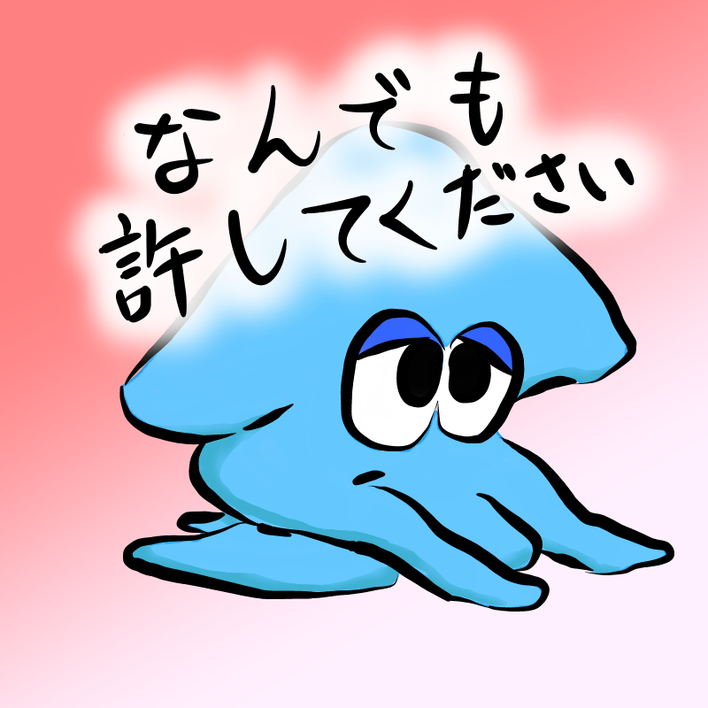

here: https://laplaciannin102.github.io/for_twitter/
Profile for twitter
Profile for twitter
名前
杏仁豆腐
アイコン
いか

説明1
説明2
- 東工プロジェクト(創設)
- SOS団 at 東工大支部
- Mellow Pretty
- 東方Lシューター, 天則Ph
使用キャラ
- 非想天則: 西瓜, 幽々子
- Splatoon: ぬりぬりローラー
- Spla2: XP2560 / ヴァリロー, 寿司, スプラローラー, デュアルスイーパーカスタム
- Spla3: S+50カンスト, XP2603 / ヴァリロー, スプロラ
- 競プロとか: Python, C#
Skills
Programming languages
- Python
- R
- SQL
- C++
- C#
- Java
- JavaScript
- VBA
- VB.NET
- html
etc...
Cloud
- AWS多め
- Azureそこそこ
- GCP少し
Data Science / AI
- 時系列分析・予測多め
- 自然言語処理そこそこ
- 画像処理少し
- その他機械学習・最適化等幅広く
職歴
| No. | 在籍期間 | 業種 / 領域 | 企業規模 | 職種 |
|---|---|---|---|---|
| 01 | -2018 | IT・SI / 画像処理 | 中堅 | Software Engineer |
| 02 | 2018-2019 | データ・AI | 小規模 | Data Scientist |
| 03 | 2019-2024 | 精密機器・オフィス機器 | 大手 | Data Scientist |
| 04 | 2024- | 通信・デジタル | 大手 | Data Scientist |
Links
Design